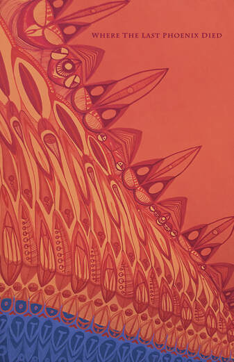
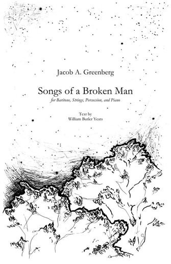

Classical
In addition to his work in theater, Jacob A. Greenberg also maintains an active career as a contemporary classical composer.

Where the Last Phoenix Died

In addition to his work in theater, Jacob A. Greenberg also maintains an active career as a contemporary classical composer.

